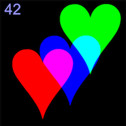
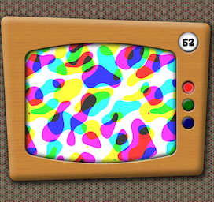
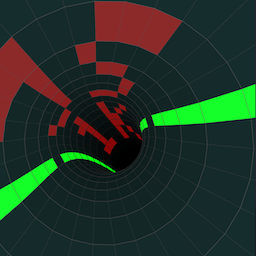
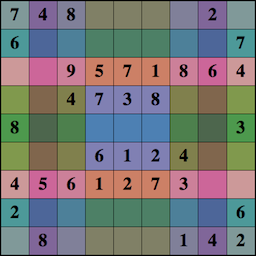

Real stuff for abstract people
Retrofy Me
See yourself in 8bit retro style. It uses the actual color palettes of the good ol' C64, ZX Spectrum and NES. Requires the GetUserMedia api. You can also tune the picture by adusting the weights of the individual colors, or make a snapshot.
RGB 1k
Inevitably, this is a true 1k version of the RGB game. I was wondering wether I could bring it down to the pure essence. Here is the result.
The RGB Game #2
The second incarnation of this game, now as a Chrome app, has evolved from tech demo to full-grown app. Submitted for the Dutch Web Store compo. Graphics by Elaine Oliver.
Fractyl Tree
A fractal tree that bounces to the beat. Created in a single day with Sjoerd Visscher and Ferry velt. The music only works in Chrome because to sync the music, the Web Audio API was required.
Pxxl.js lib
With pxxl.js and the included BDF font files you can 'render' a text to an array of pixel coordinates. You can then use the pixel coordinates to do your own drawing.
Dysentery!
With this demo I placed 9th at the 3rd JS1K contest. It's a pseudo 3D text ontop of an XOR plasma. What's up with the 'dysentery'? don't ask.. just Google for 'Oregon Trail'..
The RGB Game

My latest weekend hack: The RGB Game. Try to align the 3 color channels to reproduce the original picture. Sounds easy? Try it!
Wipeout1k
Classic tunnel effect. Check! Weighs under 1k as this was my final submission for the js1k compo. An homage to one of my favorite PlayStation games
Sudoku Solver
This one I did a few years back. In addition to the classic backtracking solver, the solution is animated and the colors represent the # of vacancies per row, column and quadrant, mapped to respective RGB channels.